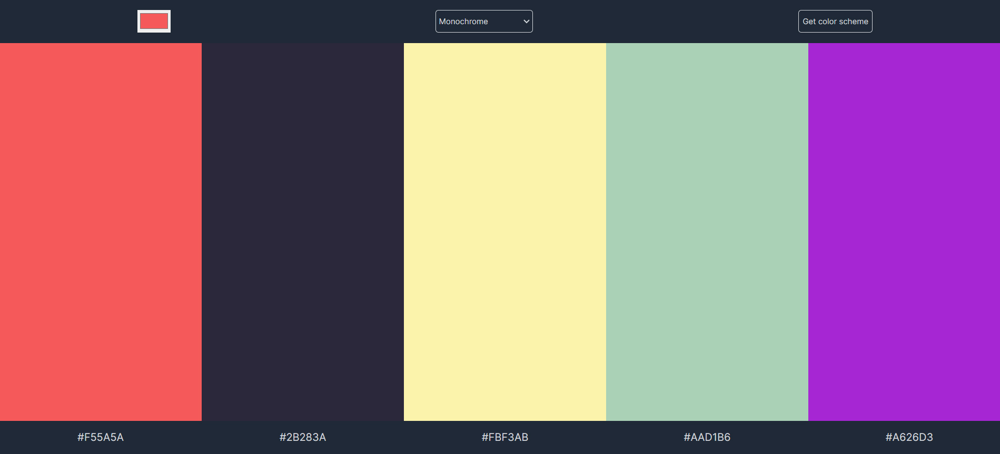
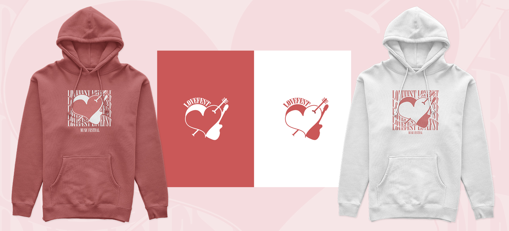
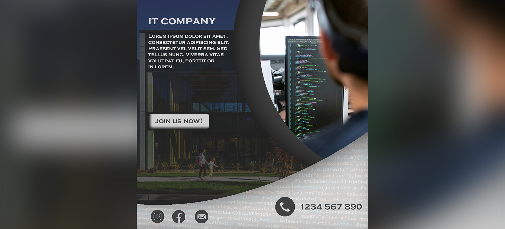
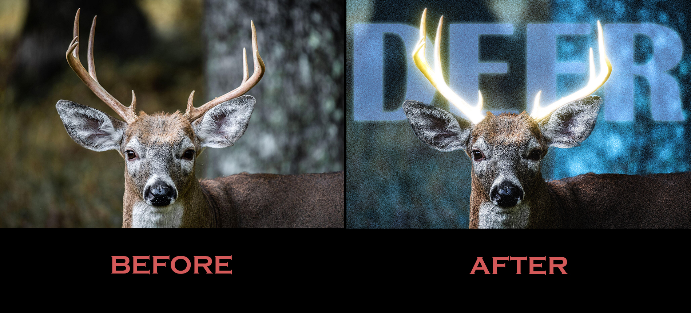

PORTFOLIO

Personal Website
Created using HTML, CSS, and JavaScript, it reflects my creativity and technical prowess. Through carefully selected content, visitors can get a comprehensive overview of who I am both professionally and personally. The website includes sections dedicated to detailed information about my background, skills, and experiences, offering a complete look at my abilities. Additionally, the portfolio section highlights my projects, demonstrating my expertise in action.

Food Ordering App
Introducing a food ordering app. An innovative solution that brings culinary specialties right to your fingertips. This app, built using HTML, CSS, and JavaScript, seamlessly blends functionality with a visually appealing interface, offering users a pleasant and convenient way to satisfy their cravings.

Shopping List
Presenting a delightful shopping list - a practical tool for managing your shopping items. This list, created using HTML, CSS, JavaScript, and Firebase database, allows for real-time storage and synchronization of items. Features such as adding, removing, and marking items make the shopping list simple and fun.

Color Picker
Introducing a color picker website. A dynamic and user-friendly tool designed to simplify color selection for any project. This website, built using a combination of HTML, CSS, and JavaScript, enables users to effortlessly explore a spectrum of colors and find the perfect shades for their designs.

Unit Converter
This unit converter, created using HTML, CSS, and JavaScript, allows conversions between meters, feet, gallons, liters, kilograms, and pounds. Users can simply enter a value in one unit and get instant results in the desired units. The converter is designed to be clean and intuitive, with a responsive layout ensuring comfortable use across devices.

Video Editing
This video editing was done for a tutorial on how to use a website. The project involved cutting and styling footage, synchronizing visuals with voiceover.
Open catalog
Advertisement for Social Media
Behold, the embodiment of design perfection! My latest Instagram advertisement, precisely created using Photoshop CS6, is proof of our commitment to aesthetic excellence. Every pixel, every shade, carefully selected to captivate and inspire. Enter a sphere where creativity blends with technology.

Deer Antlers
Unleash the mystical allure of the night with my latest creation! Witness the fascinating transformation of an ordinary image into an ethereal masterpiece, courtesy of Photoshop CS6. As a witness, ordinary antlers become glowing beacons, casting an enchanting glow against the backdrop of darkness.

Open Day (Video)
This video represents a creative project I edited in Adobe Premiere Pro when I was 17 years old. The video was created for my high school, where I used my video editing skills to create an engaging and visually impressive story. I used a combination of professional techniques and a creative approach to enhance the visuals and sound, creating an unforgettable experience for the viewers.

Prievidza (Video)
This video, created by me in Adobe Premiere Pro when I was 17, captures the beauty of my city, Prievidza. With a touch of nostalgia, it showcases urban landscapes and local places that evoke memories and emotions. I used various editing techniques and visual effects to create an atmosphere that draws the viewers into the unique ambiance of my city.